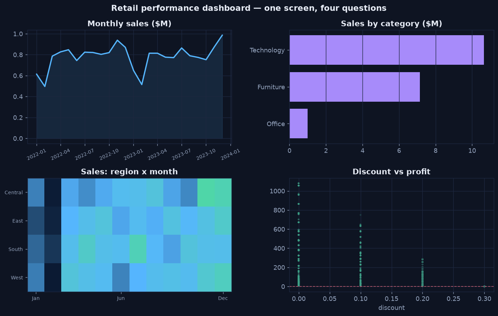

Visualization Analytics
The Cross-Cutting "How" of Every Analytics Type
Visualization is not the decorative last step of analysis — it is the channel through which every other type of analytics reaches a human. Descriptive, diagnostic, predictive, and prescriptive work all end in the same place: someone looking at a picture and deciding what to do. Visualization analytics is the discipline of choosing the right encoding so that the picture tells the truth quickly and the reader reaches the intended conclusion without doing arithmetic in their head.
This is a four-chapter mini-series. Each chapter is hands-on: it explains a concept, shows the Python that produces a chart, and embeds the actual rendered output — every figure on these pages was generated by the code shown, on one shared synthetic retail dataset (the same dataset used across the Descriptive Analytics series).
The same tidy table can be encoded many ways; visualization analytics is choosing the encoding that answers the question, then composing those views into one coherent dashboard.
The Four Chapters
Choosing the Right Chart
Pick the chart from the question — comparison, time, relationship, distribution, density — with a rendered example of every type.
Perceptual Encoding
Why position beats colour: the accuracy ranking of visual channels, bar vs pie, and zero-baseline axes — shown side by side.
Beyond the Basics — Advanced Charts
Small multiples, box plots, and annotated time series — the patterns that carry richer questions than a single comparison.
Designing a Dashboard
Composing several charts into one deliberate argument — hierarchy, one idea per chart, consistency — ending in a full rendered dashboard.
The Payoff — One Screen, Four Questions
The series builds toward a single dashboard that answers four business questions at a glance. Every panel is produced by the code in the chapters above, on the shared retail dataset:

The destination of this mini-series — built panel by panel across the four chapters.
Reference Code
The chart helpers shown here are also packaged as reusable, tested functions in the
Data Analytics Library's
datavisualization module. For the time-aware half of visualization — smoothing a noisy series into
a readable trend — see Visualization & Trending, step 6 of the
Descriptive Analytics series.